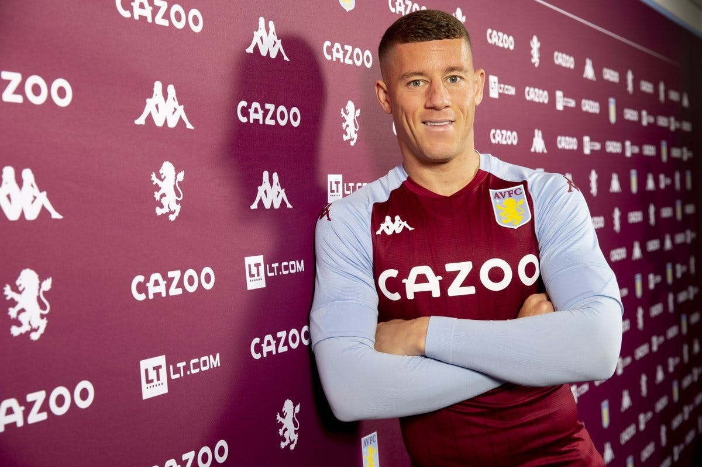
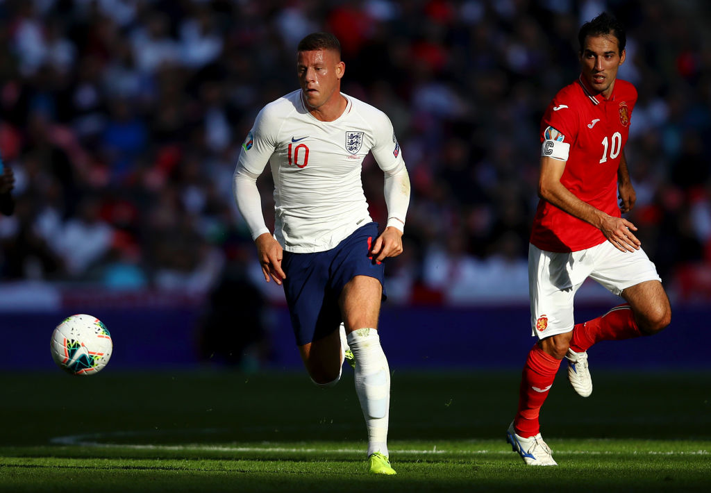

ROSS BARKLEY
ROSS BARKLEYบาร์คลี่ย์ย้ายมาพร้อมกับประสบการณ์ที่เต็มเปี่ยม ลงเล่นในพรีเมียร์ลีกไปแล้ว 150 นัดให้กับเอฟเวอร์ตัน ตลอดจนลงเล่นในทีมชาติอังกฤษทั้งในฟุตบอลโลกและยูโรเปี้ยน แชมเปี้ยนชิพมาแล้ว
ความอเนกประสงค์ของเขาทำให้สามารถเล่นในตำแหน่งหลังสไตรค์เกอร์, ตำแหน่งมิดฟิลด์ตัวรับ และปีกข้าง เขามีความสามารถในการเก็บบอลและสร้างโอกาสให้คนอื่นได้ดีเยี่ยม
บาร์คลี่ย์ ลงเล่นในเกมนัดเปิดสนาม 3 นัดแรกของฤดูกาล พร้อมทำประตูในศึกคาราบาว คัพ เกมกับบาร์นสลี่ย์ ก่อนย้ายออกไปแบบยืมตัวในเดือนกันยายน
บาร์คลี่ย์ ใช้เวลาส่วนใหญ่ในฤดูกาล 2020/21 ไปเล่นแบบยืมตัวให้กับแอสตัน วิลล่า เขามีอาการบาดเจ็บรบกวนในการค้าแข้งที่วิลล่า พาร์ค ซึ่งเริ่มต้นสวยหรูถล่มลิเวอร์พูล 7-2 เจ้าตัวยิงไป 3 ประตูจากการลงเล่นรวม 24 นัด
หลังลงเล่นให้อังกฤษรุ่นเยาวชนมานาน บาร์คลี่ย์ก็มาได้ติดทีมชุดใหญ่ครั้งแรกในปี 2013 ลงเล่นในเกมฟุตบอลโลกรอบคัดเลือกที่พบกับมอลโดวาที่เวมบลีย์ กองกลางรายนี้ยังติดทีมชาติในรอบสุดท้าย และลงเป็นตัวสำรองให้อังกฤษในเกมแรกที่แพ้อิตาลี 2-1 หลังจากนั้นก็ได้ลงเล่นเต็มเกมที่อังกฤษเสมอคอสตาริก้า 0-0 ในเกมสุดท้ายของรายการนั้น
บาร์คลี่ย์ทำประตูแรกในทีมชาติได้ในนัดที่ชนะซาน มารีโน่ 6-0 ในยูโร 2016 รอบคัดเลือก และแม้ว่าจะติดทีมชาติในรอบสุดท้าย แต่เขาก็ไม่ได้ลงเล่นเลย
บาร์คลี่ย์ไม่ติดทีมชาติชุดฟุตบอลโลก 2018 แต่ผลงานช่วงต้นฤดูกาลกับเชลซีที่น่าประทับใจทำให้เขาติดทีมชาติชุดลุยยูฟ่า เนชั่น ลีก และลงเป็นตัวจริงทุกเกม รวมเกมที่ชนะสเปนและอังกฤษเป็นจ่าฝูงของกลุ่มก่อนผ่านเข้ารอบสุดท้ายด้วย
SOCIAL MEDIA
 |
|